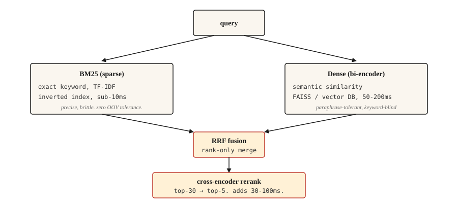

Home / NLP, Foundations to Advanced
Information Retrieval and Search
BM25 is precise but brittle. Dense casts a wide net but misses keywords. Hybrid is the 2026 default. Everything else is tuning.
- Type
- Build
- Languages
- Python
- Prerequisites
- Phase 5 · 02 (BoW + TF-IDF), Phase 5 · 04 (GloVe, FastText, Subword)
- Time
- ~75 minutes
#The Problem
The user types "what happens if someone lies to get money" and expects to find the statute that actually covers that: "Section 420 IPC." A keyword search misses it entirely (no shared vocabulary). A semantic search misses it if the embeddings were not trained on legal text. Real search has to handle both.
IR is the pipeline under every RAG system, every search bar, every docs site's fuzzy lookup. The 2026 architecture that works in production is not a single method. It is a chain of complementary methods, each catching the failures of the one before.
This lesson builds each piece and names which failures each catches.
#The Concept

Four layers. Pick the ones you need.
- Sparse retrieval (BM25). Fast, precise on exact matches, terrible on semantics. Run over an inverted index. Sub-10ms per query on millions of documents. Gets you statute references, product codes, error messages, named entities right.
- Dense retrieval. Encode query and documents into vectors. Nearest neighbor search. Captures paraphrases and semantic similarity. Misses exact keyword matches that differ by one character. 50-200ms per query with FAISS or a vector DB.
- Fusion. Merge the ranked lists from sparse and dense. Reciprocal Rank Fusion (RRF) is the easy default because it ignores raw scores (which live in different scales) and only uses rank positions. Weighted fusion is an option when you know one signal dominates for your domain.
- Cross-encoder rerank. Take the top-30 from fusion. Run a cross-encoder (query + document together, scoring each pair). Keep the top-5. Cross-encoders are slower per pair than bi-encoders but far more accurate. You amortize by only running them on the top-30.
Three-way retrieval (BM25 + dense + learned-sparse like SPLADE) outperforms two-way in 2026 benchmarks but needs infrastructure for learned-sparse indexes. For most teams, two-way plus cross-encoder rerank is the sweet spot.
#Build It
#Step 1: BM25 from scratch
import math
import re
from collections import Counter
TOKEN_RE = re.compile(r"[a-z0-9]+")
def tokenize(text):
return TOKEN_RE.findall(text.lower())
class BM25:
def __init__(self, corpus, k1=1.5, b=0.75):
if not corpus:
raise ValueError("corpus must not be empty")
self.corpus = [tokenize(d) for d in corpus]
self.k1 = k1
self.b = b
self.n_docs = len(self.corpus)
self.avg_dl = sum(len(d) for d in self.corpus) / self.n_docs
self.df = Counter()
for doc in self.corpus:
for term in set(doc):
self.df[term] += 1
def idf(self, term):
n = self.df.get(term, 0)
return math.log(1 + (self.n_docs - n + 0.5) / (n + 0.5))
def score(self, query, doc_idx):
q_tokens = tokenize(query)
doc = self.corpus[doc_idx]
dl = len(doc)
freq = Counter(doc)
score = 0.0
for term in q_tokens:
f = freq.get(term, 0)
if f == 0:
continue
numerator = f * (self.k1 + 1)
denominator = f + self.k1 * (1 - self.b + self.b * dl / self.avg_dl)
score += self.idf(term) * numerator / denominator
return score
def rank(self, query, top_k=10):
scored = [(self.score(query, i), i) for i in range(self.n_docs)]
scored.sort(reverse=True)
return scored[:top_k]Two parameters worth knowing. k1=1.5 controls term-frequency saturation; higher means more weight on term repetition. b=0.75 controls length normalization; 0 ignores document length, 1 fully normalizes. The defaults are Robertson's recommendations from the original paper and rarely need tuning.
#Step 2: dense retrieval with a bi-encoder
from sentence_transformers import SentenceTransformer
import numpy as np
def build_dense_index(corpus, model_id="sentence-transformers/all-MiniLM-L6-v2"):
encoder = SentenceTransformer(model_id)
embeddings = encoder.encode(corpus, normalize_embeddings=True)
return encoder, embeddings
def dense_search(encoder, embeddings, query, top_k=10):
q_emb = encoder.encode([query], normalize_embeddings=True)
sims = (embeddings @ q_emb.T).flatten()
order = np.argsort(-sims)[:top_k]
return [(float(sims[i]), int(i)) for i in order]L2-normalize embeddings so dot product equals cosine. all-MiniLM-L6-v2 is 384-dim, fast, and strong enough for most English retrieval. For multilingual work, use paraphrase-multilingual-MiniLM-L12-v2. For top accuracy, bge-large-en-v1.5 or e5-large-v2.
#Step 3: Reciprocal Rank Fusion
def reciprocal_rank_fusion(rankings, k=60):
scores = {}
for ranking in rankings:
for rank, (_, doc_idx) in enumerate(ranking):
scores[doc_idx] = scores.get(doc_idx, 0.0) + 1.0 / (k + rank + 1)
fused = sorted(scores.items(), key=lambda x: x[1], reverse=True)
return [(score, doc_idx) for doc_idx, score in fused]The k=60 constant comes from the original RRF paper. Higher k flattens the contribution of rank differences; lower k makes top ranks dominate. 60 is the published default and rarely needs tuning.
#Step 4: hybrid search + rerank
from sentence_transformers import CrossEncoder
reranker = CrossEncoder("cross-encoder/ms-marco-MiniLM-L-6-v2")
def hybrid_search(query, bm25, encoder, dense_embeddings, corpus, top_k=5, pool_size=30, reranker=reranker):
sparse_ranking = bm25.rank(query, top_k=pool_size)
dense_ranking = dense_search(encoder, dense_embeddings, query, top_k=pool_size)
fused = reciprocal_rank_fusion([sparse_ranking, dense_ranking])[:pool_size]
pairs = [(query, corpus[doc_idx]) for _, doc_idx in fused]
scores = reranker.predict(pairs)
reranked = sorted(zip(scores, [doc_idx for _, doc_idx in fused]), reverse=True)
return reranked[:top_k]Three stages composed. BM25 finds lexical matches. Dense finds semantic matches. RRF merges the two rankings without needing score calibration. Cross-encoder rescores the top-30 using query-document pairs together, which captures fine-grained relevance the bi-encoder missed. Keep top-5.
#Step 5: evaluation
| Metric | Meaning |
|---|---|
| Recall@k | Of queries where the correct document exists, how often is it in the top-k? |
| MRR (Mean Reciprocal Rank) | Average of 1/rank of first relevant document. |
| nDCG@k | Accounts for relevance gradations, not just binary relevant/not. |
For RAG specifically, Recall@k of the retriever is the most important number. Your reader cannot answer if the right passage is not in the retrieved set.
Debugging tip: for failing queries, diff the sparse and dense rankings. If one finds the right document and the other does not, you have a vocabulary mismatch (fix: add the missing half) or a semantic ambiguity (fix: better embeddings or a reranker).
#Use It
The 2026 stack:
| Scale | Stack |
|---|---|
| 1k-100k docs | In-memory BM25 + all-MiniLM-L6-v2 embeddings + RRF. No separate DB. |
| 100k-10M docs | FAISS or pgvector for dense + Elasticsearch / OpenSearch for BM25. Run in parallel. |
| 10M+ docs | Qdrant / Weaviate / Vespa / Milvus with hybrid support. Cross-encoder rerank on top-30. |
| Best-quality frontier | Three-way (BM25 + dense + SPLADE) + ColBERT late-interaction reranking |
Whatever you pick, budget for evaluation. Benchmark retrieval recall before benchmarking end-to-end RAG accuracy. A reader cannot fix what the retriever missed.
#The hard-won lessons from 2026 production RAG
- 80% of RAG failures trace to ingestion and chunking, not the model. Teams spend weeks swapping LLMs and tuning prompts while the retrieval quietly returns the wrong context every third query. Fix chunking first.
- Chunking strategy matters more than chunk size. Fixed-size splits break tables, code, and nested headers. Sentence-aware is the default; semantic or LLM-based chunking pays off for technical docs and product manuals.
- Parent-doc pattern. Retrieve small "child" chunks for precision. When multiple children from the same parent section appear, swap in the parent block to preserve context. This consistently lifts answer quality without retraining.
- k_rerank=3 is usually optimal. Every extra chunk past that adds token cost and generation latency without lifting answer quality. If k=8 is still better than k=3 for you, the reranker is underperforming.
- HyDE / query expansion. Generate a hypothetical answer from the query, embed that, retrieve. Bridges the phrasing gap between short questions and long documents. Free precision lift with no training.
- Context budget under 8K tokens. Consistent hits at that limit mean the reranker threshold is too loose.
- Version everything. Prompts, chunking rules, embedding model, reranker. Any drift silently breaks answer quality. CI gates on faithfulness, context precision, and unanswered-question rate block regressions before users see them.
- Three-way retrieval (BM25 + dense + learned-sparse like SPLADE) outperforms two-way on 2026 benchmarks, especially for queries mixing proper nouns with semantics. Ship it when infrastructure supports SPLADE indexes.
Proper retrieval design reduces hallucinations by 70-90% according to 2026 industry measurements. Most RAG performance gains come from better retrieval, not model fine-tuning.
#Ship It
Save as outputs/skill-retrieval-picker.md:
---
name: retrieval-picker
description: Pick a retrieval stack for a given corpus and query pattern.
version: 1.0.0
phase: 5
lesson: 14
tags: [nlp, retrieval, rag, search]
---
Given requirements (corpus size, query pattern, latency budget, quality bar, infra constraints), output:
1. Stack. BM25 only, dense only, hybrid (BM25 + dense + RRF), hybrid + cross-encoder rerank, or three-way (BM25 + dense + learned-sparse).
2. Dense encoder. Name the specific model. Match to language(s), domain, and context length.
3. Reranker. Name the specific cross-encoder model if used. Flag that rerank adds 30-100ms latency on top-30.
4. Evaluation plan. Recall@10 is the primary retriever metric. MRR for multi-answer. Baseline first, incremental improvements measured against it.
Refuse to recommend dense-only for corpora with named entities, error codes, or product SKUs unless the user has evidence dense handles exact matches. Refuse to skip reranking for high-stakes retrieval (legal, medical) where the final top-5 decides the user's answer.#Exercises
- Easy. Implement
hybrid_searchabove on a 500-document corpus. Test 20 queries. Compare recall at 5 between BM25-only, dense-only, and hybrid. - Medium. Add MRR calculation. For each test query with a known correct document, find the rank of the correct doc in BM25, dense, and hybrid rankings. Report the MRR for each.
- Hard. Fine-tune a dense encoder on your domain using MultipleNegativesRankingLoss (Sentence Transformers). Build a training set from 500 query-document pairs. Compare pre- and post-fine-tune recall.
#Key Terms
| Term | What people say | What it actually means |
|---|---|---|
| BM25 | Keyword search | Okapi BM25. Scores documents by term frequency, IDF, and length. |
| Dense retrieval | Vector search | Encode query + doc into vectors, find nearest neighbors. |
| Bi-encoder | Embedding model | Encodes query and doc independently. Fast at query time. |
| Cross-encoder | Reranker model | Encodes query + doc together. Slow but accurate. |
| RRF | Rank fusion | Combine two rankings by summing 1/(k + rank). |
| Recall@k | Retrieval metric | Fraction of queries where a relevant doc is in the top-k. |
#Further Reading
- Robertson and Zaragoza (2009). The Probabilistic Relevance Framework: BM25 and Beyond — the definitive BM25 treatment.
- Karpukhin et al. (2020). Dense Passage Retrieval for Open-Domain QA — DPR, the canonical bi-encoder.
- Formal et al. (2021). SPLADE: Sparse Lexical and Expansion Model — the learned-sparse retriever that closes the gap with dense.
- Cormack, Clarke, Büttcher (2009). Reciprocal Rank Fusion outperforms Condorcet and individual Rank Learning Methods — RRF paper.
- Khattab and Zaharia (2020). ColBERT: Efficient and Effective Passage Search — late-interaction retrieval.
Nice. That's 6 minutes of NLP, Foundations to Advanced behind you.
Continue to Topic Modeling — LDA and BERTopic →